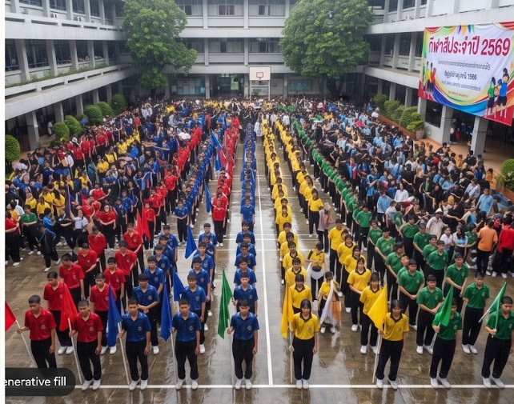
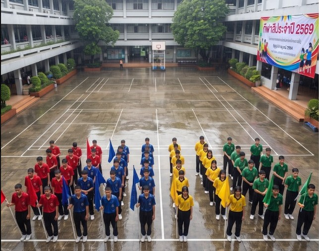

โรงเรียนราชวิถีวิทยาคมจัดงาน "กีฬาสีประจำปี 2569" ขึ้นที่ลานอเนกประสงค์หน้าอาคาร 1 โดยมีขบวนพาเหรดเปิดงานเป็นไฮไลต์สำคัญที่สุด เพราะปีนี้โรงเรียนตั้งใจถ่ายภาพลงเพจเฟซบุ๊กทางการเพื่อใช้ประชาสัมพันธ์รับสมัครนักเรียนใหม่ไปพร้อมกัน "ครีม" นักเรียนชั้น ม.5 หัวหน้าฝ่ายประชาสัมพันธ์ ได้รับมอบหมายให้ถ่ายภาพขบวนพาเหรด แต่เช้าวันงานฝนตกหนัก ทำให้มีผู้ปกครองและนักเรียนมาร่วมงานได้น้อยกว่าที่เชิญไว้มาก ลานครึ่งหลังจึงดูโล่งว่างเปล่าในภาพ ครีมจึงใช้ฟีเจอร์ AI เติมภาพ (generative fill) สั่งให้ระบบเติมฝูงชนนักเรียนให้เต็มพื้นที่ว่างด้านหลัง แล้วเลือกภาพที่แต่งแล้วไปโพสต์ลงเพจโรงเรียน ด้านล่างนี้คือภาพที่ครีมโพสต์ ลองกดสลับดูภาพต้นฉบับเทียบกับภาพที่แต่งแล้ว

ครูวรรณี ครูที่ปรึกษาฝ่ายประชาสัมพันธ์ เห็นการถกเถียงจึงขอให้ครีมส่งภาพทั้งสองเวอร์ชันมาให้ดูเปรียบเทียบ ด้านล่างนี้เป็นสมาร์ทโฟนครูวรรณี ที่คุณครูวรรณีขอให้ครีมส่งภาพทั้งสองมาเปรียบเทียบ

สถานการณ์ที่ 9: ขบวนพาเหรดกีฬาสี
คอมเมนต์ของต้นข้าวทำให้เกิดการถกเถียงว่าการเติม AI ต่างจากการแต่งสีหรือครอบตัดภาพทั่วไปอย่างไร
ข้อ 1 — เกิดอะไรขึ้นกับภาพที่ครีมโพสต์?
เมื่อเปรียบเทียบภาพต้นฉบับกับภาพที่ครีมนำไปโพสต์ ข้อใดอธิบายสิ่งที่เกิดขึ้นกับภาพได้ถูกต้องที่สุด
ข้อ 2 — ต่างจากการแต่งสี/ครอบตัดภาพอย่างไร?
อธิบายว่าการใช้ AI เติมฝูงชนเพิ่มเข้าไปในภาพแตกต่างจากการแต่งสีภาพหรือครอบตัดภาพทั่วไปอย่างไร พร้อมอธิบายว่าเหตุใดความแตกต่างนี้จึงสำคัญเมื่อภาพจะถูกนำไปใช้ในรายงานหรือสื่อประชาสัมพันธ์อย่างเป็นทางการของโรงเรียน (อธิบายให้ครบอย่างน้อย 2 ประเด็น)